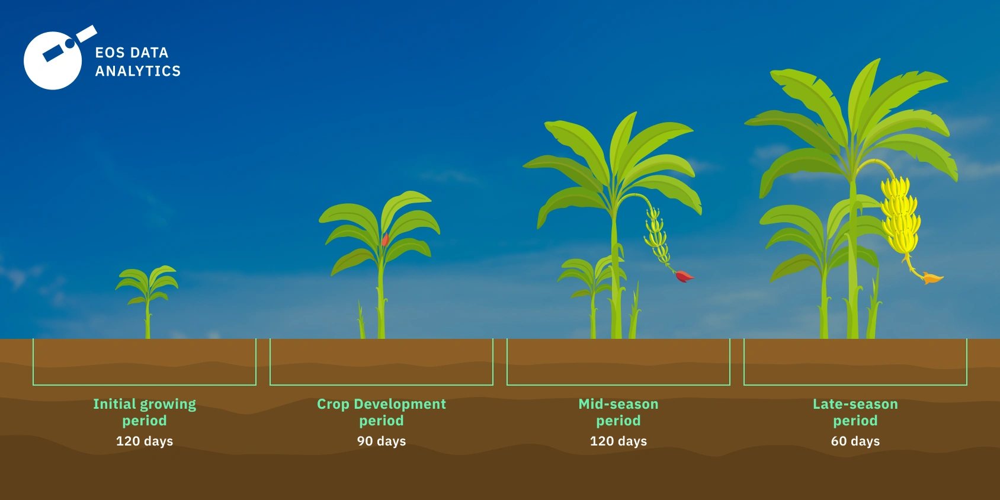
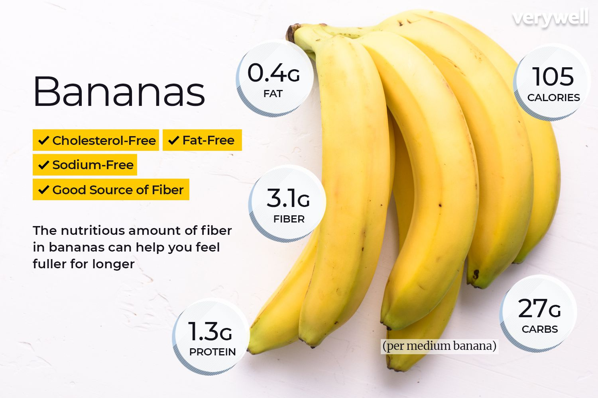
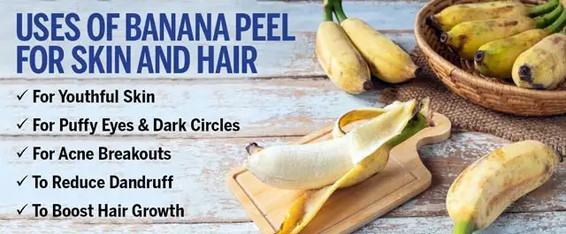
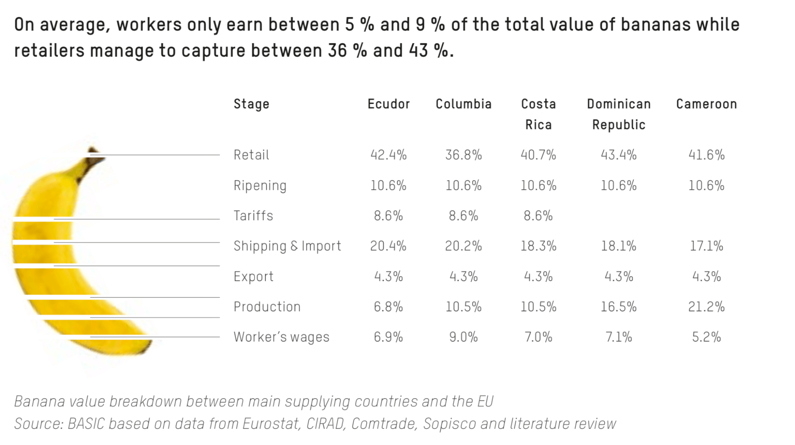

Banana
Types of Banana:
Cavendish Banana:
Description: The Cavendish banana is the most common variety found in supermarkets. It has a sweet flavor and a firm texture.
Uses: Often consumed raw, used in baking, and as a primary ingredient in banana chips.
Plantain:
Description: Plantains are larger and starchier than Cavendish bananas. They are typically cooked before consumption.
Uses: Commonly used in savory dishes, fried, boiled, or baked.
Red Banana:
Description: Red bananas have a reddish-purple skin and a sweet, creamy flesh. They are smaller than Cavendish bananas.
Uses: Often consumed raw, used in baking, and as a primary ingredient in banana chips.
Blue Java Banana:
Description: Blue Java bananas have a blue-tinted skin and a texture similar to ice cream when ripe.
Uses: Consumed raw, used in baking, and as a primary ingredient in banana chips.
Growing Conditions
Climate:
Temperature:
Optimal Range: Bananas prefer warm temperatures between 24°C to 30°C for optimal growth.
Cold Tolerance: Bananas are sensitive to cold and can be damaged by temperatures below 12°C.
Humidity: Bananas thrive in humid conditions, ideally between 60% to 80%.
Rainfall and Moisture:
Moderate Rainfall: Bananas require consistent rainfall, generally between 1,500mm to 3,000mm per year.
Irrigation: In areas with insufficient rainfall, irrigation is necessary to maintain soil moisture, especially during dry periods.
Drainage: Well-drained soil is crucial to prevent waterlogging, ```html
which can harm banana roots.
Sunlight:
Bananas require full sun to partial shade, ideally receiving 6 to 8 hours of direct sunlight daily. Adequate sunlight is essential for photosynthesis, which drives plant growth and fruit development.
Soil:
Bananas prefer well-drained, fertile soils with a pH range of 5.5 to 6.5.
Soil Type: Well-drained, fertile soils with good aeration are ideal for banana cultivation.
Organic Matter: Incorporating organic matter into the soil enhances its fertility and structure, supporting healthy root growth and nutrient uptake.
Soil Preparation:
Plowing and Tilling: Proper soil preparation involves plowing and tilling to create a fine seedbed, improving soil structure, eliminating weeds, and incorporating organic matter or fertilizers.
Leveling: Leveling the field ensures uniform irrigation and prevents waterlogging in low-lying areas, facilitating efficient planting and crop management.
Soil Conservation:
Erosion Control: Practices such as contour plowing, terracing, and maintaining ground cover help prevent soil erosion, which can deplete soil fertility and structure.
Crop Rotation: Rotating bananas with other crops, such as legumes, can improve soil health by reducing the buildup of pests and diseases and enhancing soil nutrient levels through nitrogen fixation.
Water Requirements:
General Water Needs:
Bananas require approximately 1,500-3,000 millimeters (mm) of water throughout their growing season, depending on the variety, climate, and soil conditions.
Critical Growth Stages:
Germination: Adequate soil moisture is necessary for seed germination and seedling establishment.
Vegetative Stage: Water is crucial during the vegetative stage to promote leaf development and growth.
Flowering: Adequate moisture at the flowering stage ensures proper flower and fruit development.
Harvest Stage: Reducing irrigation towards the end of the growing season allows the soil to dry, facilitating harvesting and preventing lodging.
Drought and Stress Management:
Drought-Resistant Varieties: Plant drought-resistant banana varieties in regions prone to water scarcity. These varieties are bred to withstand periods of water stress.
Deficit Irrigation: Implement strategies where water is applied during the most critical growth stages to manage water resources during drought conditions.
Planting and Seeding:
Planting:
Bananas can be sown either by planting suckers or by using tissue culture for more uniform planting. They are typically planted in the spring after the last frost date.
Seeding Rates:
The seeding rate varies but generally ranges from 2 to 4 suckers per hectare, depending on the variety and planting method.
Nutritional Value:
Carbohydrates:
Bananas are a rich source of carbohydrates, providing energy.
Fiber:
Bananas are high in dietary fiber, promoting digestive health.
Vitamins and Minerals:
Bananas contain essential nutrients, including vitamins C and B6, potassium, and manganese.
Uses:
Food:
Bananas are commonly consumed raw, used in baking, and as a primary ingredient in smoothies and desserts.
By-Products:
Banana peels can be used as compost, and banana oil is extracted from the fruit for use in cosmetics and pharmaceuticals.
Environmental Impact and Sustainability:
Bananas are a relatively sustainable crop, requiring less water compared to other crops. However, their production can have environmental impacts, such as deforestation and water pollution. Sustainable practices, such as organic farming and integrated pest management, can help minimize these impacts.
